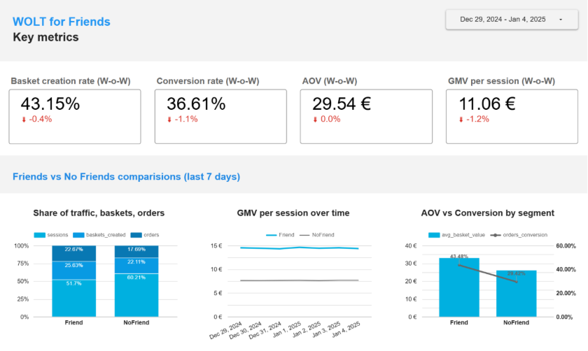

Background & Motivation
Inspired by Wolt's hackathon culture, I explored a product concept designed to leverage social proof to reduce decision friction at two critical drop-off points: basket creation and checkout conversion.
The feature — "Wolt for Friends" — is a fully opt-in social layer that surfaces what your contacts have recently ordered, reducing the cognitive load of choosing a restaurant or dish.
Proposed MVP (Fully Opt-In)
The MVP was scoped to three lightweight features requiring no changes to the core ordering flow:
Friend Connection
Add friends via phone contacts — opt-in only, no automatic syncing.
"Friends Ordered Here" Badge
Restaurant pages show a subtle badge when a friend has ordered there recently.
One-Tap Reorder
Reorder from a friend's past order with a single tap — reduces menu decision fatigue.
Key Metrics Defined
Metrics were chosen to capture the full funnel from session entry to revenue generated, ensuring the feature's impact could be measured at each conversion step:
| Metric | Definition | Why it matters |
|---|---|---|
| Basket Creation Rate | % of sessions that create a basket | Measures top-of-funnel intent — does the feature reduce browsing friction? |
| Conversion Rate | % of baskets that convert to paid checkout | Measures bottom-of-funnel commitment — does social proof reduce abandonment? |
| AOV (Avg. Order Value) | Average spend per completed order | Does seeing friend orders influence basket size upward? |
| GMV per Session | Total revenue divided by total sessions | Composite efficiency metric — revenue impact per app open regardless of conversion path. |
Looker Dashboard (Pilot Overview)
A Looker dashboard was built to monitor all four KPIs in real time, segmented by Friend vs. No-Friend users, with week-over-week trending to surface baseline effects.

Pilot Results (7 Days · 11% Traffic)
Results are reported as Friend vs. No-Friend segment comparisons within the pilot window:
Guardrails Before Scaling
Before recommending a broader rollout, the following constraints were defined to protect user trust and product quality:
Support ticket rate: Max 3 tickets per 1,000 orders — a threshold to catch unexpected friction or confusion introduced by the feature.
Privacy constraints: Only first name + initial and dish picture are surfaced — no order history, restaurant names, or spend data visible to friends.
Feed cap: Friends feed limited to last 10 orders per user to prevent spam and keep the experience lightweight.
Conclusion & Recommendation
Pilot results support proceeding to a wider rollout
The Friend segment showed meaningful lifts across all four success metrics, with the largest gains in order conversion (+14pp) and GMV/session (+46.7%). These are the two metrics most directly tied to Wolt's core business health.
The WoW aggregate dip is attributable to the post-holiday baseline shift and does not represent a negative signal from the feature itself — the controlled segment comparison cleanly isolates feature impact from external trends.
Recommended next steps: expand traffic allocation to 30–50%, monitor guardrail metrics closely for the first 2 weeks, and conduct a qualitative survey with Friend-segment users to understand which of the three MVP features (badge, reorder, connection) drives the most engagement.